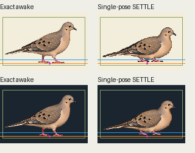
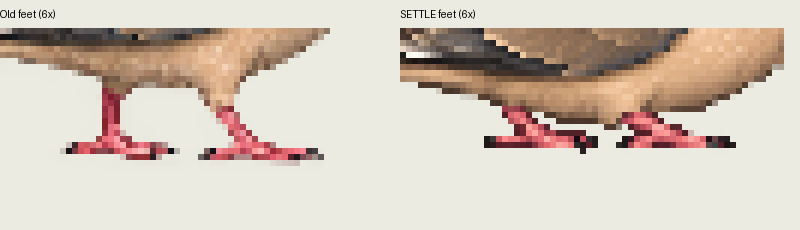
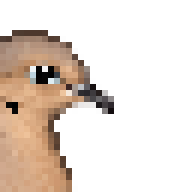

ONE new native drawing; no full bathing or contact admission. Unchanged old awake versus direct whole-canvas144×96 output; same136×80 crop. Orange floor84, blue water78, green common crop, magenta image pivot81,84. Guides are diagnostic only. New contact list remains empty.

Authored one-shot comparison: old1000ms / settle800ms / old1000ms. This is a pose proof, not a completed action.
Native original and exact RGBA nearest output retained. No pixel painting, body fitting, contact snapping or alpha cleanup. Fixed crop excludes one faint positivealpha output pixel;full144/native preserved. Source-foot placement remains held. geometryReviewed=false; supportWorld=null.

